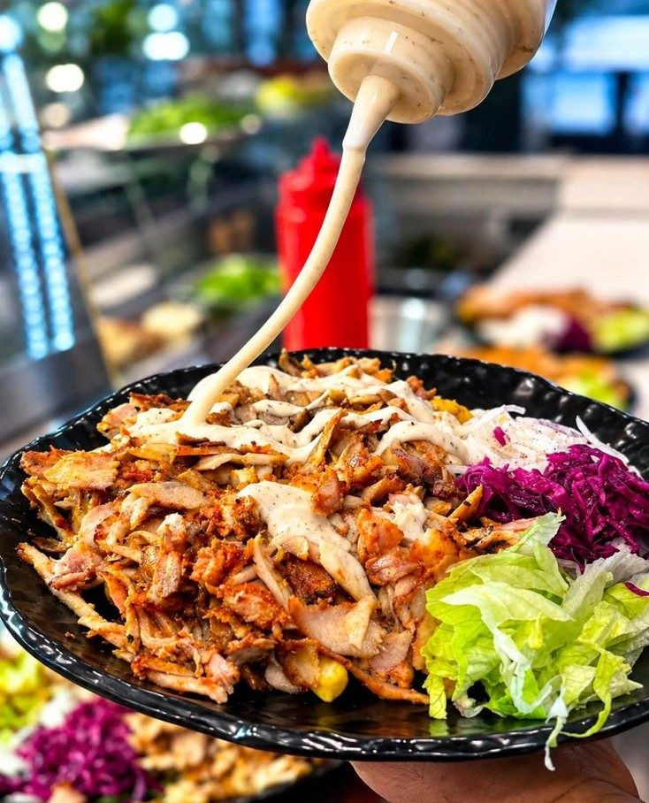
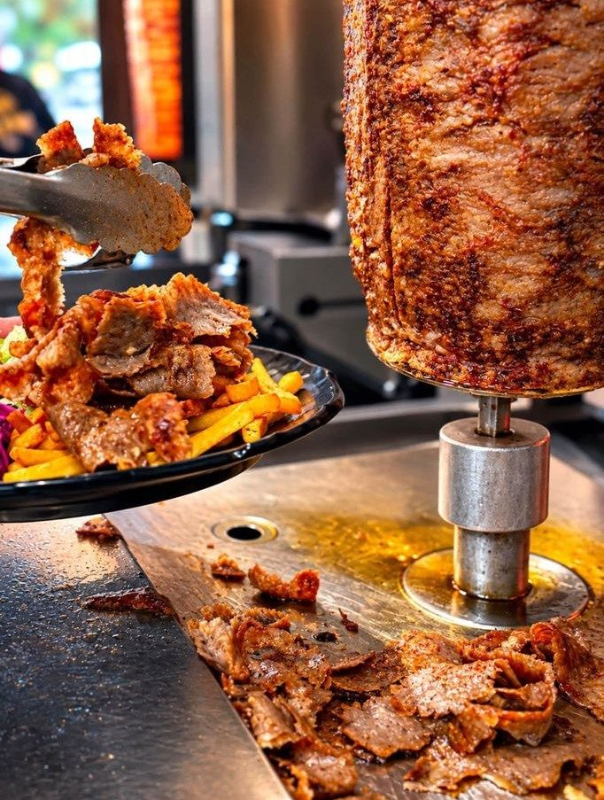
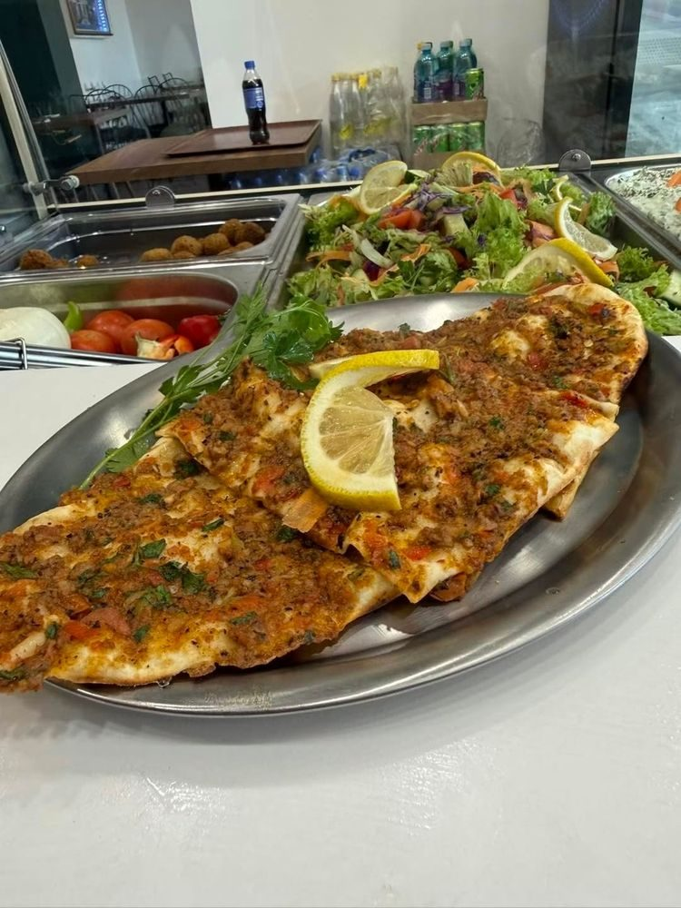
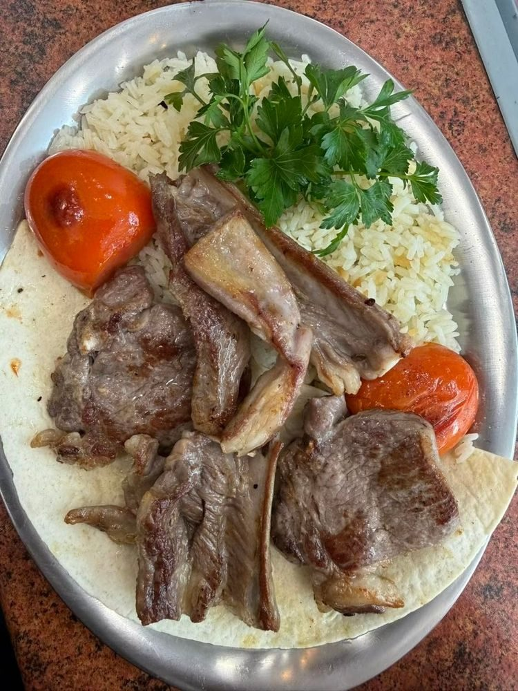
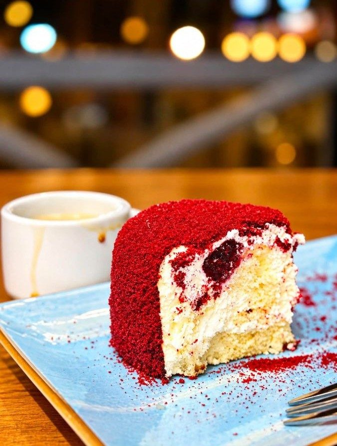
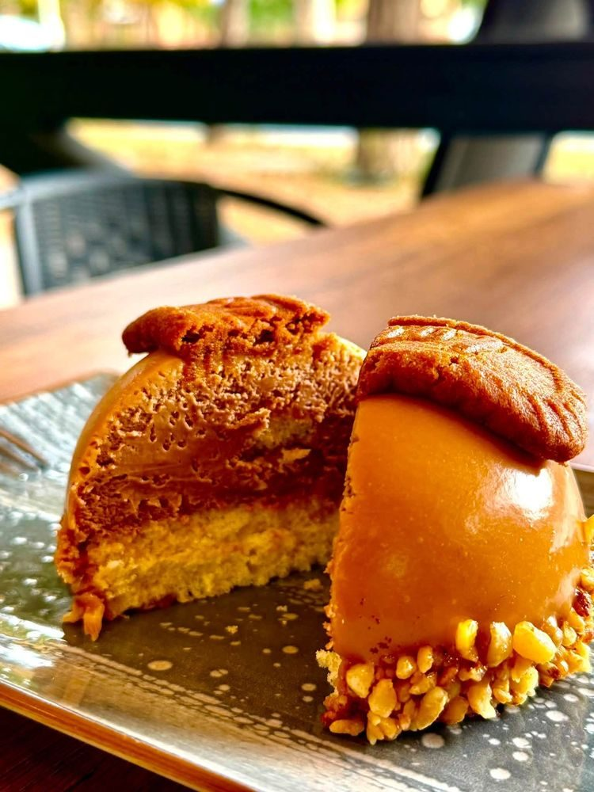
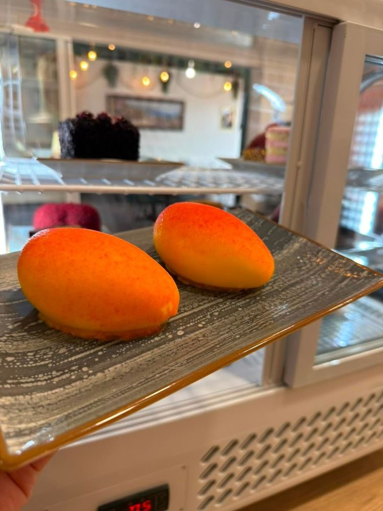
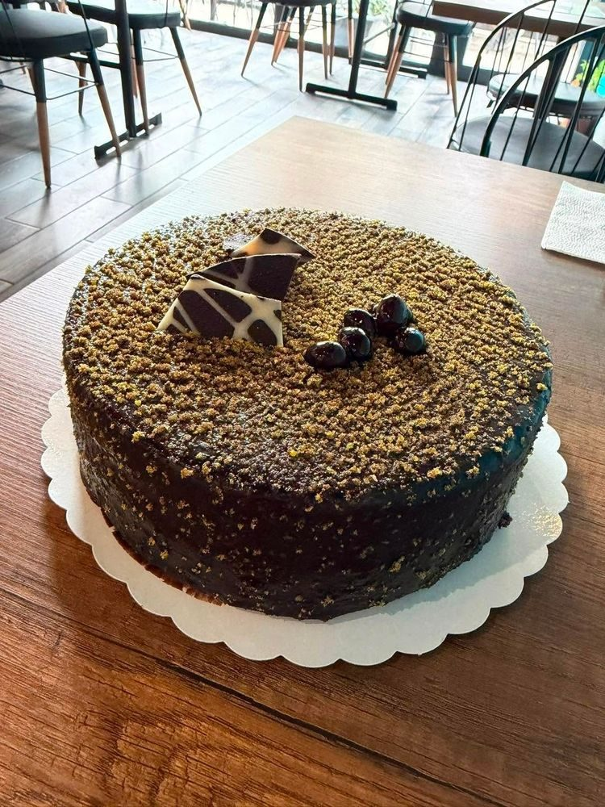
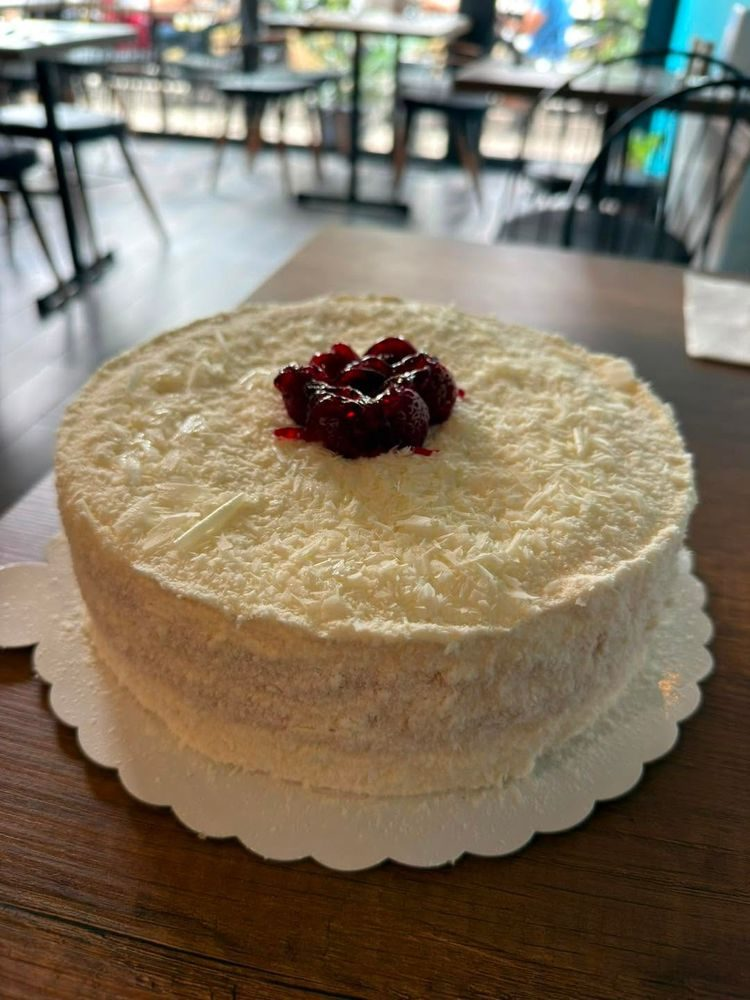
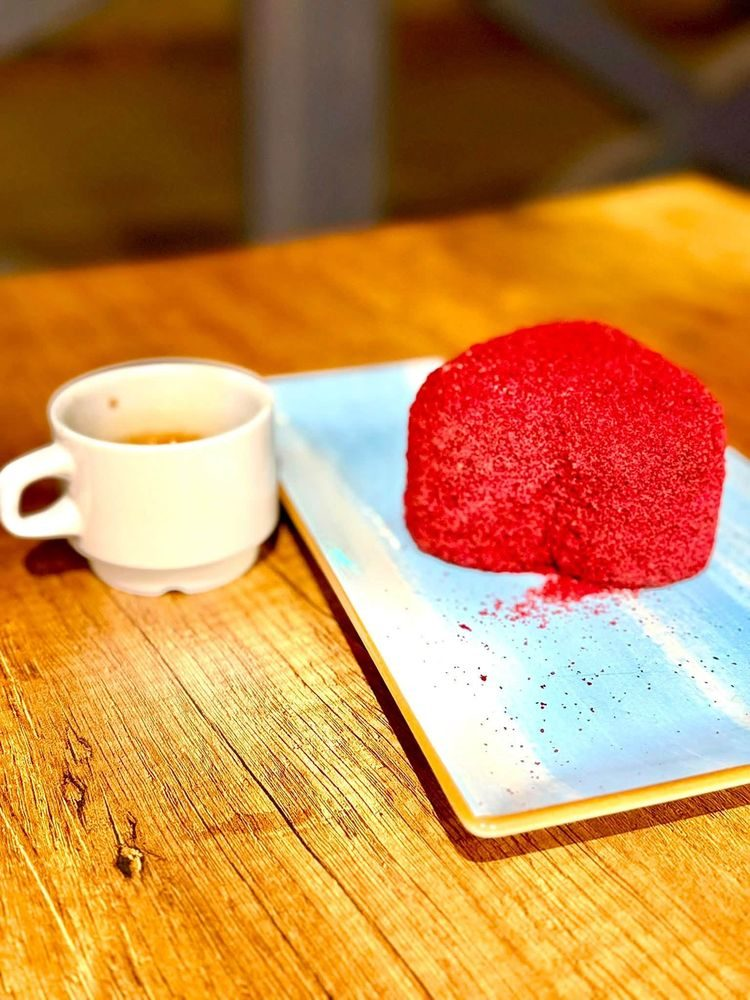

Wolt
Házhoz is visszük
Rendeld meg a dönert, a kebabot vagy a vegyes kebab tálat a Wolton keresztül – vagy keress fel minket Székesfehérváron, a Budai út 82–84. alatt.
Török ízek a Budai úton
Nyárson sült döner, lahmacun, grilltálak – és a vitrinben torták, sütemények. Térj be hozzánk, vagy rendeld házhoz a Wolton keresztül!
Török étterem Székesfehérváron, a Budai út 82–84. alatt. Nyárson sülő dönerhús, salátás dönertál, citrommal tálalt lahmacun, grillezett húsok rizzsel és sült paradicsommal – a desszertes vitrinben pedig torták és sütemények várnak. Kiszállítás a Wolton keresztül.








6 490 Ft
6 990 Ft
4 299 Ft
2 690 Ft
3 690 Ft
3 990 Ft
12 990 Ft
38 490 Ft
1 790 Ft
2 490 Ft
850 Ft
Árak a Wolt-étlap alapján (2026. november 2.); a helyi árak eltérhetnek.


Az étkezés végére: a vitrinben egész torták, tortaszeletek és gyümölcs formájú desszertek. A Wolton a baklava 1 790 Ft, egy szelet torta 2 490 Ft.
Rendeld meg a dönert, a kebabot vagy a vegyes kebab tálat a Wolton keresztül – vagy keress fel minket Székesfehérváron, a Budai út 82–84. alatt.